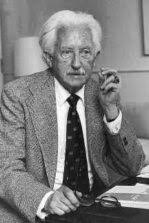

Erik Erikson

Precursor: Erik Erikson
Aportes: Desarrolló la teoría del desarrollo psicosocial, que describe ocho etapas del desarrollo a lo largo de la vida, cada una con un conflicto psicosocial a resolver.
Enfoque e Ideas Principales: Erikson propuso que el desarrollo humano es un proceso continuo que abarca toda la vida, con cada etapa implicando una crisis o desafío específico.
Diferencias y Similitudes: A diferencia de Freud, quien se centró en las etapas psicosexuales, Erikson se enfocó en aspectos sociales y culturales en el desarrollo del individuo.
Abordaje Terapéutico: La terapia basada en la teoría de Erikson puede centrarse en ayudar a las personas a resolver conflictos psicosociales y promover el desarrollo saludable a lo largo de su vida.